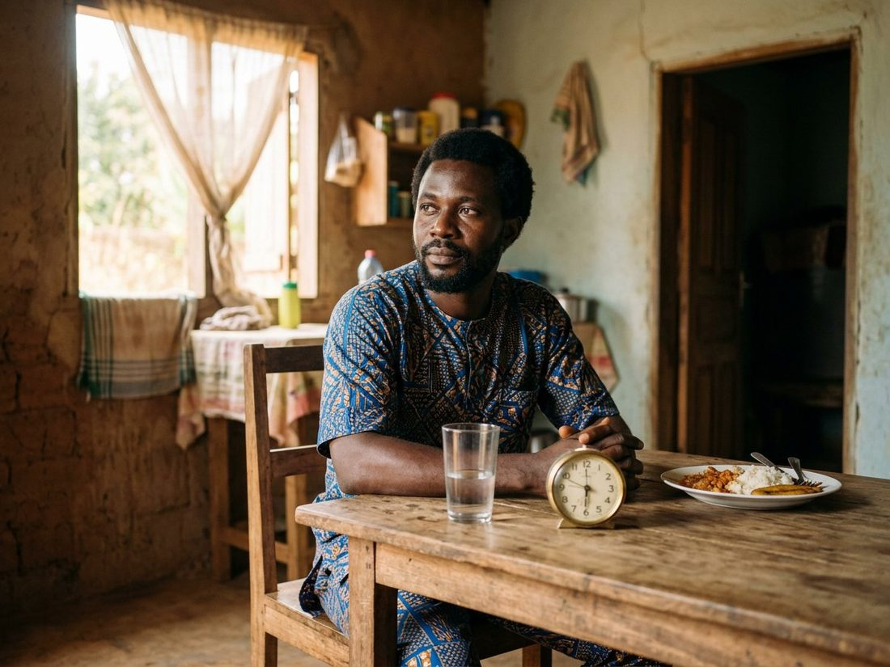
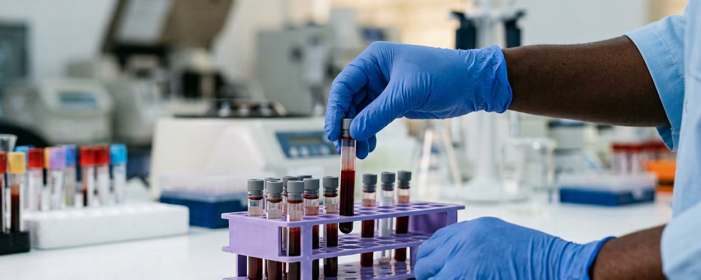

Laboratoire d'analyses de biologie médicale · Bonamoussadi, DoualaMedical biology laboratory · Bonamoussadi, Douala
Un diagnostic sûr commence par une analyse fiable.A confident diagnosis starts with a reliable test.
Vous arrivez avec l'ordonnance de votre médecin : nous réalisons l'analyse, puis nous vous remettons le résultat au laboratoire. Carrefour Etoo, Bonamoussadi — en français et en anglais.You come with your doctor's request: we run the test and hand you the result at the laboratory. Carrefour Etoo, Bonamoussadi, in English and in French.
UNI-LABO ExempleExample
- AnalysesTests
- Glycémie · Hémogramme complet (NFS)Glucose · Complete blood count (CBC)
- PréparationPreparation
- À jeun 8 à 12 h, l'eau est permiseFasting 8 to 12 h, water allowed
- MomentTime
- Lundi–vendredi 7h–19h · samedi 7h–13hMonday–Friday 7am–7pm · Saturday 7am–1pm
NomName
Le formulaire remplit cette fiche avec vos analyses, et l'envoie sur WhatsApp.The form fills this sheet with your tests and sends it on WhatsApp.
Comment ça se passeHow it works
-
1 · Vous apportez l'ordonnance1 · Bring the request
Le papier de votre médecin, ou une photo nette si vous l'avez reçue par téléphone. Votre carte de couverture si vous en avez une.Your doctor's paper, or a clear photo if it came by phone. Your cover card if you have one.
-
2 · Vous préparez l'analyse2 · Prepare the test
Certaines analyses demandent d'être à jeun. La consigne dépend de ce qui est prescrit : demandez-la nous sur WhatsApp avant de venir.Some tests need fasting. The instruction depends on what is prescribed: ask us on WhatsApp before you come.
-
3 · Prélèvement sur place3 · Sample taken here
Au laboratoire, Carrefour Etoo. Nous vous confirmons le délai au moment du dépôt.At the laboratory, Carrefour Etoo. We confirm the turnaround when you drop off.
-
4 · Vous repartez avec le résultat4 · You leave with the result
Remis au laboratoire, sur présentation du reçu — et expliqué par la biologiste si vous le souhaitez.Handed to you at the laboratory on the receipt, and explained by the biologist if you wish.
Avant de venirBefore you come
La préparation, écrite noir sur blanc.The preparation, written plainly.
La plupart des analyses ratées le sont pour une seule raison : la préparation. Choisissez ce qui vous concerne — et si vous avez un doute, écrivez-nous : nous répondons avec la consigne exacte.Most spoiled tests fail for one reason only: preparation. Pick what applies to you, and if in doubt, message us: we answer with the exact instruction.

Analyses à jeunFasting tests
Glycémie, cholestérol, triglycérides : venez le matin, sans manger depuis 8 à 12 heures. L'eau est permise, et vos médicaments habituels sont pris normalement, sauf avis contraire de votre médecin.Glucose, cholesterol, triglycerides: come in the morning, without food for 8 to 12 hours. Water is allowed, and your usual medication is taken as normal unless your doctor says otherwise.
Analyses d'urinesUrine tests
Le recueil se fait au laboratoire : nous vous remettons le flacon propre et la consigne au moment du dépôt. Pour certains examens, on demande la première urine du matin — nous vous le dirons à l'avance.The sample is collected at the laboratory: we hand you the clean container and the instruction when you arrive. Some tests need the first urine of the morning, we will tell you in advance.
Dosages hormonauxHormone tests
Plusieurs dosages hormonaux se font le matin, et certains dépendent du jour du cycle ou d'un moment précis de la journée. C'est l'analyse qui commande : demandez-nous la consigne exacte avant de venir, nous vous donnerons la date et l'heure.Many hormone tests are done in the morning, and some depend on the day of the cycle or a precise time of day. The test decides: ask us for the exact instruction before coming and we will give you the date and time.
Pour un enfantFor a child
Précisez l'âge à l'accueil : les valeurs normales ne sont pas les mêmes que chez l'adulte. Pour les tout-petits, venez si possible à deux et dites-le nous à l'avance — nous vous dirons le meilleur moment de la journée.Mention the age at reception: normal values differ from an adult's. For very young children, come with a second person if you can and tell us in advance, we will advise the best time of day.
Suivi d'un traitementTreatment follow-up
Apportez le résultat précédent : la comparaison avec le nouveau est ce qui montre si le traitement agit. C'est aussi la question que votre médecin posera — autant l'avoir sous la main.Bring the previous result: comparing it with the new one is what shows whether the treatment is working. It is also the first question your doctor will ask, worth having it at hand.
Dans tous les cas : demandez-nous la consigne avant de venir. Une question sur WhatsApp coûte une minute et évite un déplacement pour rien.In every case: ask us before you come. A question on WhatsApp takes a minute and saves you a wasted trip.
Ce que nous dosons.What we run.
Les analyses prescrites par votre médecin, dans quatre grands domaines. Aucun tarif n'est affiché ici : le prix dépend de l'analyse et du réactif du jour — demandez-le sur WhatsApp, vous l'aurez en une réponse.The tests your doctor prescribes, across four areas. No prices are shown here: the price depends on the test and the day's reagent, ask on WhatsApp and you will have it in one reply.

BiochimieBiochemistry
- Glycémie (à jeun et post-prandiale)Glucose (fasting and after meals)
- Cholestérol total, HDL, LDL, triglycéridesTotal cholesterol, HDL, LDL, triglycerides
- Créatinine et urée (fonction rénale)Creatinine and urea (kidney function)
- Transaminases (fonction du foie)Transaminases (liver function)
HématologieHaematology
- Hémogramme complet (NFS)Complete blood count (CBC)
- Groupe sanguin et rhésusBlood group and rhesus
- Vitesse de sédimentation (VS)Erythrocyte sedimentation rate (ESR)
- Comptage des plaquettesPlatelet count
Sérologie & immunologieSerology & immunology
- Widal (fièvre typhoïde)Widal (typhoid fever)
- Hépatites B et CHepatitis B and C
- VIH 1 & 2HIV 1 & 2
- CRP (inflammation)CRP (inflammation)
HormonologieHormonology
- TSH, T3, T4 (thyroïde)TSH, T3, T4 (thyroid)
- ProlactineProlactin
- Bêta-HCG (grossesse)Beta-HCG (pregnancy)
- FSH et LHFSH and LH
Votre analyse n'est pas dans cette liste ? Elle l'est probablement quand même : envoyez-nous l'ordonnance en photo, nous vous répondons avec le tarif et la préparation.Not seeing your test? It is probably still here: send us a photo of the request and we reply with the price and the preparation.
Dites-nous ce que vous venez chercher.Tell us what you are coming for.
Choisissez vos analyses, écrivez votre nom, choisissez un moment : le message part déjà écrit vers notre WhatsApp. Rien n'est enregistré sur ce site — c'est votre téléphone qui envoie le message, et nous répondons avec le prix et la préparation.Pick your tests, write your name, choose a time: the message leaves already written to our WhatsApp. Nothing is stored on this site, your phone sends the message, and we reply with the price and the preparation.
UNI-LABO à compléterto fill in
- NomName
- —
- AnalysesTests
- —
- PréparationPreparation
- —
- MomentTime
- —
Cochez vos analyses : cette fiche se remplit sous vos yeux, puis part sur WhatsApp.Tick your tests: this sheet fills in as you go, then leaves on WhatsApp.
OùWhere
Carrefour Etoo, Bonamoussadi (Makepe Bloc L), Douala.Carrefour Etoo, Bonamoussadi (Makepe Bloc L), Douala.
QuandWhen
Lundi–vendredi 7h–19h · samedi 7h–13h.Monday-Friday 7am-7pm · Saturday 7am-1pm.
Quoi apporterWhat to bring
L'ordonnance si vous en avez une, et votre carte de couverture si vous en avez une. Une question ? 696 13 98 19Your prescription if you have one, and your cover card if you have one. A question? 696 13 98 19
Où et quand récupérer le résultat.Where and when to collect your result.
Retrait au laboratoireCollection at the laboratory
- Sur présentation du reçu remis au dépôt.On presentation of the receipt given at drop-off.
- Le délai dépend de l'analyse : nous vous le confirmons au moment du prélèvement, pour que vous sachiez quand revenir.The turnaround depends on the test: we confirm it when the sample is taken, so you know when to come back.
- Si quelqu'un vient à votre place, prévenez-nous : nous vous dirons ce qu'il faut apporter.If someone collects it for you, tell us first: we will say what they need to bring.
Un doute sur un résultat déjà retiré ? Écrivez-nous avec la date du prélèvement — c'est plus rapide qu'un déplacement.A question about a result you already collected? Message us with the sample date. Faster than a trip.
La biologisteThe biologist
« Réaliser les analyses biologiques prescrites par un médecin, en vue de confirmer ou d'infirmer un diagnostic, de traiter une maladie ou d'assurer un suivi thérapeutique. »“To run the biological tests a doctor prescribes, in order to confirm or rule out a diagnosis, to treat an illness, or to follow a treatment.”
C'est la mission du laboratoire, écrite par le laboratoire. Dr Tientcheu Philomène, biologiste, conduit les analyses et peut vous expliquer un résultat sur place.That is the laboratory's mission, in its own words. Dr Tientcheu Philomène, biologist, runs the tests and can explain a result to you on site.
Carrefour Etoo, Bonamoussadi.Carrefour Etoo, Bonamoussadi.
Ce qu'on nous demande au guichet, écrit ici.What people ask at the desk, written here.
Faut-il être à jeun ?Do I need to fast?
Pour la glycémie, le cholestérol et les triglycérides : 8 à 12 heures sans manger, l'eau est permise. Pour les autres analyses, ce n'est pas toujours nécessaire — demandez-nous avant de venir. Si votre médecin a donné une consigne précise, c'est la sienne qui compte.For glucose, cholesterol and triglycerides: 8 to 12 hours without food, water is allowed. For other tests it is not always needed, so ask us before coming. If your doctor gave a specific instruction, that one wins.
Quand venir pour un dosage hormonal ?When should I come for a hormone test?
Souvent le matin, et parfois à un jour précis du cycle. Écrivez-nous le nom de l'analyse : nous vous donnons la date et l'heure exactes — c'est la seule façon d'éviter un déplacement pour rien.Often in the morning, and sometimes on a specific day of the cycle. Message us the name of the test: we give you the exact date and time, the only way to avoid a wasted trip.
Qu'est-ce que j'apporte ?What should I bring?
L'ordonnance de votre médecin (ou sa photo), votre carte de couverture si vous en avez une, et votre ancien résultat s'il s'agit d'un suivi.Your doctor's request (or a photo of it), your cover card if you have one, and your previous result if this is a follow-up.
Combien coûte une analyse ?How much does a test cost?
Le tarif dépend de l'analyse et du réactif utilisé. Envoyez-nous le nom de l'analyse (ou l'ordonnance en photo) sur WhatsApp : nous vous répondons avec le prix avant que vous vous déplaciez.The price depends on the test and the reagent used. Send us the name of the test (or a photo of the request) on WhatsApp: we reply with the price before you travel.
Où se trouve exactement le laboratoire ?Where exactly is the laboratory?
À Bonamoussadi, au carrefour Etoo — Rue 5N441 (Makepe Bloc L), Douala. Le plan ci-dessus montre le carrefour : le laboratoire est indiqué en violet.In Bonamoussadi, at Carrefour Etoo, Rue 5N441 (Makepe Bloc L), Douala. The sketch above shows the junction: the laboratory is marked in violet.